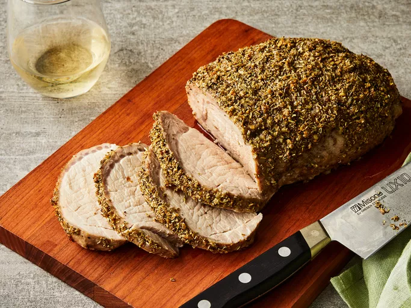

Roasted Pork Loin

Succulent pork loin with fragrant garlic, rosemary, and wine.
Fantastic recipes for your Sunday brunch or an important meeting with your family. Easy to make, light and makes everyone happy and full. Preparation time:20 mins, Cook time: 1hr 30 mins, Total time: 1hr 50 mins, Servings:8, Yield: 1 pork loin
Ingredients
- 3 cloves garlic, minced
- 1 tablespoon dried rosemary
- salt and pepper to taste
- 2 pound boneless pork loin roast
- ¼ cup olive oil
- ½ cup withe wine
Steps
- Step 1
Gather all Ingredients
- Step 2
Preheat oven to 350 degrees
- Step 3
Crush garlic with rosemary, salt and pepper in a mortar and pestle to make paste
- Step 4
pierce meat with a sharp knife in several places and press garlic paste into the openings. Rub pork loin with the remaining garlic mixture and olive oil. Set into an oven-safe pan
- Step 5
Place pork loin into the preheated oven, turning and basting with pan liquids every 30 minutes. Cook until the pork is no longer pink in the center, 90 minutes to 2 hours. An instant-read thermometer inserted into the center should read 145 degrees F (63 degrees C). Remove roast to a platter and keep warm.
- Step 6
Place pan onto the stove over medium-high heat and pour wine into it. Heat wine and stir to loosen browned bits from the bottom of the pan. Simmer for 3 to 5 minutes.
- Step 7
Slice pork loin and serve with pan juices.
back to Homepage